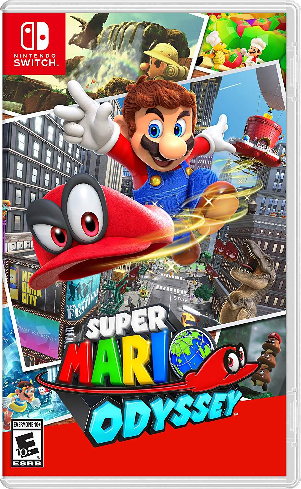
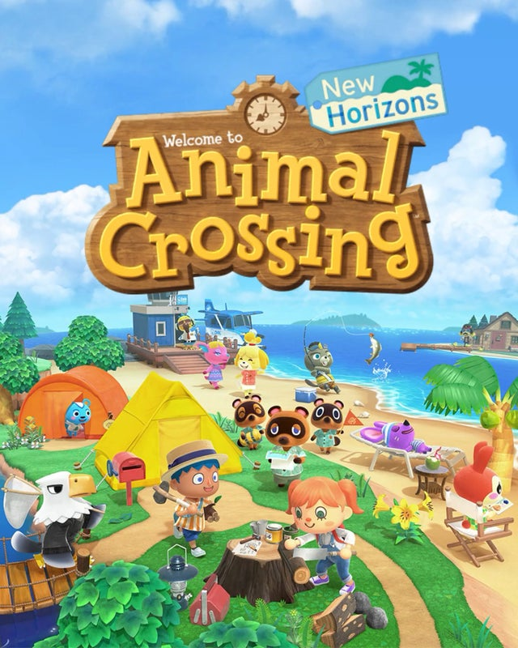

-

The Legend of Zelda: Breath of the Wild
The Legend of Zelda: Breath of the Wild es un videojuego de acción-aventura de 2017 de la serie The Legend of Zelda, desarrollado por la filial Nintendo EPD en colaboración con Monolith Soft y publicado por Nintendo para las consolas Wii U y Nintendo Switch. Es la décimo octava entrega de la serie y la tercera en utilizar gráficos en alta definición. Se lanzó el 3 de marzo de 2017 para Wii U (siendo el último juego en salir para dicha consola) y Nintendo Switch.
El jugador controla a Link, que despierta en un mundo postapocalíptico después de estar cien años durmiendo para derrotar a Ganon y salvar al reino de Hyrule. A diferencia de los otros títulos predecesores de la serie, el juego presenta un mundo abierto que le permite al jugador encontrar distintas maneras de completar un objetivo y que la historia pueda ser completada de forma no lineal.
La idea original de la distribuidora era lanzar el juego en 2015, no obstante, en marzo de dicho año, el productor Eiji Aonuma declaró que los objetivos de la empresa habían cambiado y ya no buscaban lanzar el juego en ese año, retrasándolo para 2016 Tras unos meses sin anuncios sobre el título, Nintendo anunció su retraso hasta 2017, así como que también el juego sería presentado formalmente en la E3 2016. El juego fue presentado a través de su respectivo tráiler en la E3, siendo este el eje central de la presentación de Nintendo.
Desde la primera presentación pública, Breath of the Wild fue recibido positivamente por la crítica. Luego de su lanzamiento, el juego fue elogiado por la crítica y los fanáticos de la franquicia. Resultó ganador de tres premios en los The Game Awards 2017, incluyendo juego del año. La libertad para completar objetivos de manera no lineal e interactividad que ofrece el título lo llevaron a ser catalogado como el juego más completo de la serie, y uno de los mejores videojuegos de todos los tiempos.
-

Super Mario Odyssey
Super Mario Odyssey es un videojuego de plataformas de mundo abierto para Nintendo Switch que se lanzó el 27 de octubre de 2017. Es el decimosexto título de la serie Super Mario y el séptimo videojuego de plataformas 3D de la misma.
Se lleva a cabo en el planeta Champiñón entero, en un entorno abierto como en los videojuegos Super Mario 64 y Super Mario Sunshine. Mario saca el mejor provecho de su gorra en este videojuego gracias a su nuevo compañero Cappy; puede usarla de varias maneras que le ayudarán en su aventura. Puede lanzarla como bumeran y mantenerla por unos segundos quieta antes de que regrese, para así poder usarla como plataforma para saltar, aun que también puede golpear.
Si se lanza a una criatura u objeto específico, Mario puede capturarlo y controlarlo para sacar provecho de las habilidades únicas de cada uno. Este movimiento se llama Captura.
-

Animal Crossing: New Horizons
Animal Crossing: New Horizons es un videojuego de simulación social desarrollado y publicado por Nintendo para Nintendo Switch, cuya fecha de lanzamiento mundial fue el 20 de marzo de 2020. Es la novena entrega de la saga Animal Crossing (Incluyendo su edición para dispositivos móviles).
Como en entregas previas de la serie Animal Crossing, New Horizons es un videojuego no lineal de simulación de vida a tiempo real. El jugador asume el papel de un personaje personalizable que se mueve por una isla desierta tras comprarle un pack de vacaciones a Tom Nook, un mapache recurrente en la serie. El juego procede a una forma de jugar infinita mientras el jugador explora la isla, y desarrolla una comunidad de animales antropomórficos. Parecido a la entrega spin-off de 2017 Animal Crossing: Pocket Camp, el juego introduce un sistema de elaboración que permite al usuario convertir materiales en herramientas y muebles, que pueden ser usados para decorar el interior y exterior de lugares.34 El juego dejará que el jugador personalice a su gusto el personaje y no dividirá tipos de peinado o características faciales por géneros.5 Los jugadores podrán, además, elegir su color de piel, una opción que debutó en el spin-off de 2015 Animal Crossing: Happy Home Designer y aparecerá por primera vez en una entrega principal en New Horizons.